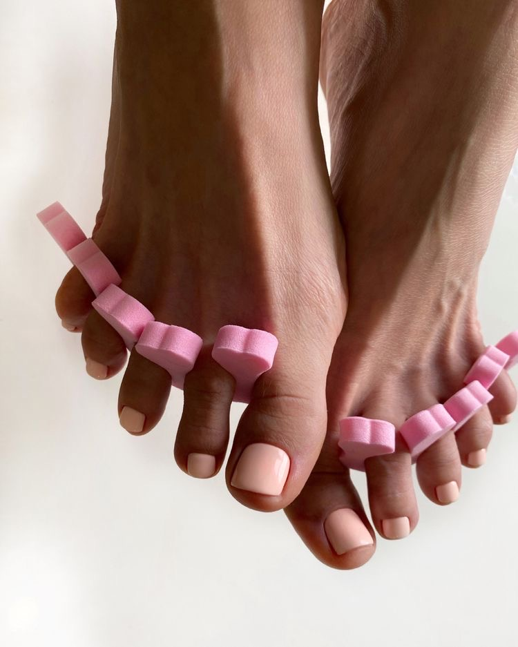
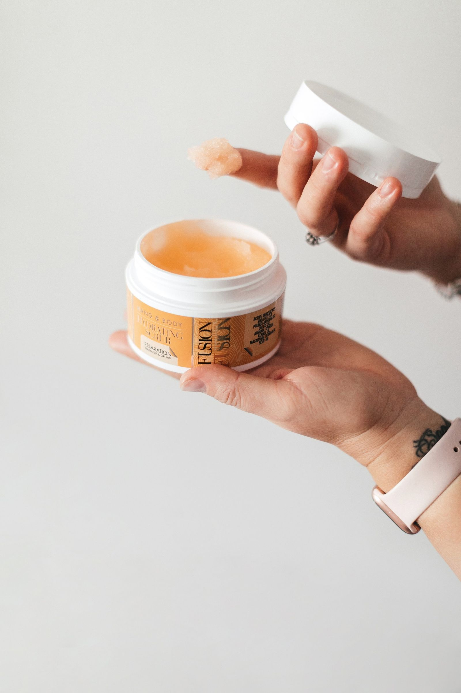
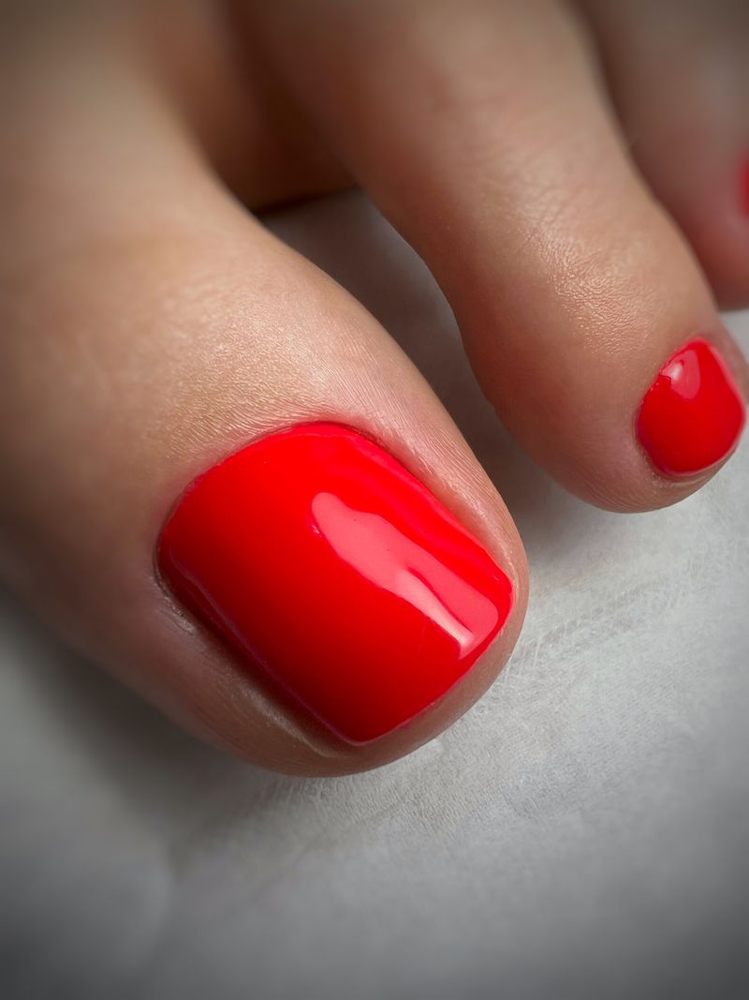
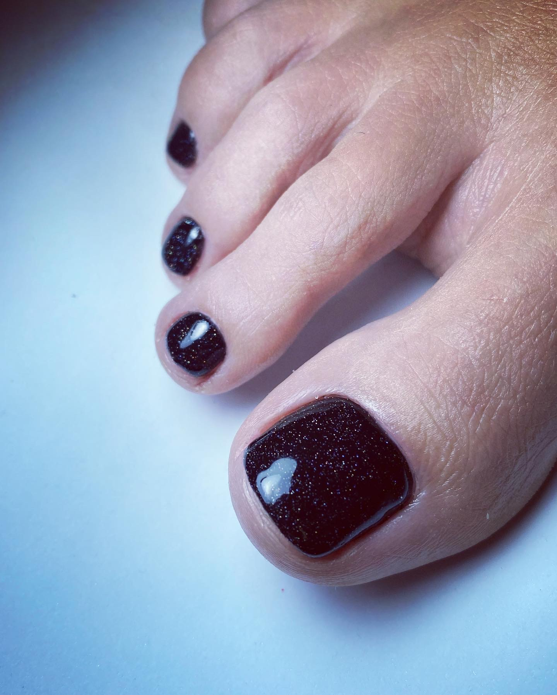

Removal care
Gel removal & classic pedicure
Without new applicationExisting gel is removed before a full classic pedicure, scrub and foot massage, without applying new gel colour.
Pedicure treatments in Hampton
Careful preparation, considered products and a polished finish, delivered one-to-one in a calm private studio.

Care from heel to toe
Every appointment includes careful preparation and close attention to the condition of your feet and nails. Choose a classic, gel or luxury treatment according to the finish and level of care you would like.
Real work
Classic, gel and luxury finishes, with every image drawn from the corresponding treatment page on the original website.



Your appointment
A calm appointment with careful preparation, a finish chosen for you and practical advice for looking after your feet.
Nails, cuticles and feet are carefully prepared according to the pedicure you have chosen.
Regular polish, gel colour or a natural finish is selected around your preferences.
You leave with practical guidance to help keep feet comfortable and the result looking fresh.
Helpful to know
A classic pedicure is finished with regular polish. A gel pedicure uses cured gel colour for a longer-lasting finish and includes more time for application.
The luxury appointment adds a foot mask to the full classic pedicure and scrub. You can choose the version with or without colour.
Yes. Choose gel removal and classic pedicure if you do not want new gel, or book a gel pedicure if you would like a fresh gel application.
Your appointment
Private pedicure appointments in Hampton, by appointment only.
Book now